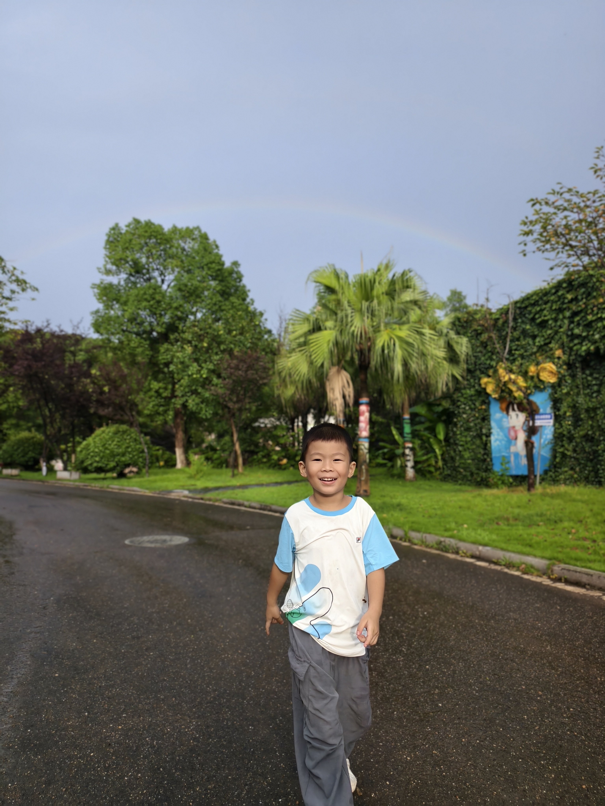
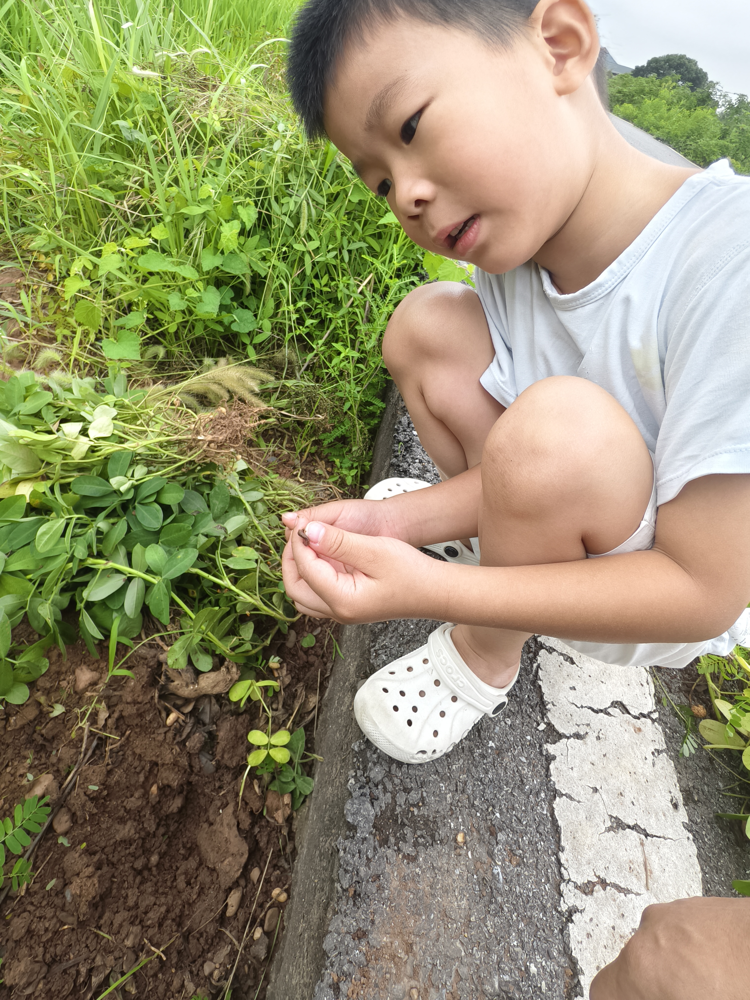
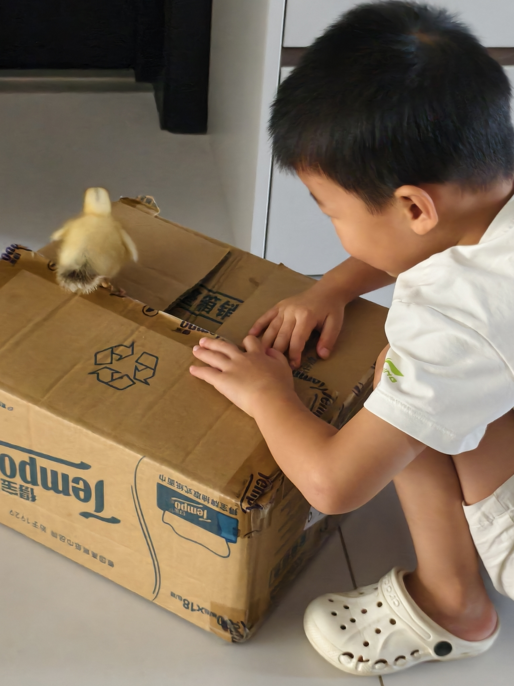
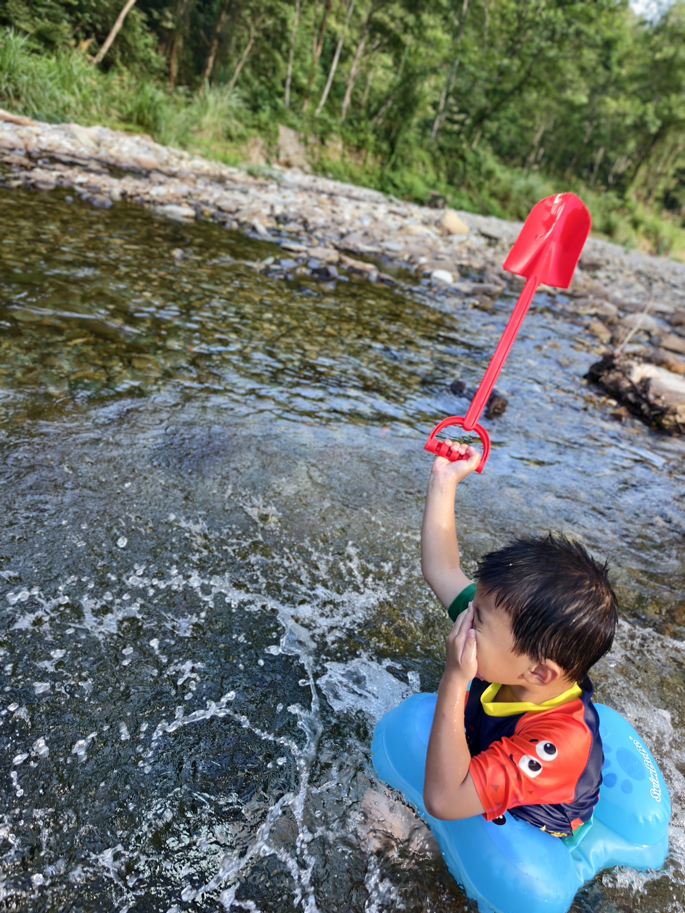
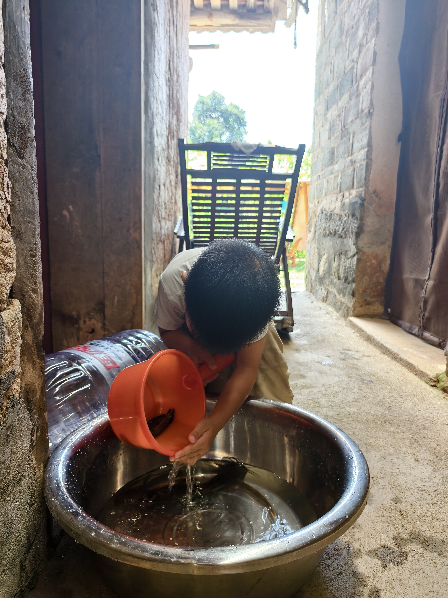

📷 时光线
暑假里的高光时刻
按时间顺序，把那些闪闪发光的日子串起来。
7月21日

看见彩虹 🌈
夏天的阵雨刚过，天空挂起一道彩虹。达哥站在湿漉漉的路上，笑得比彩虹还灿烂——大自然送的礼物，他全都收下了。
7月24日

和知了面对面 🦗
一只知了停在枯枝上，达哥侧着头，屏住呼吸，眼睛一眨不眨地盯着它看。透明的翅膀、硬硬的壳——夏天的声音，原来长这个样子。
8月8日

葡萄园里的小帮手 🍇
提着小篮子走在葡萄架下，紫红色的葡萄一串串垂下来，达哥踮起脚尖去够。阳光透过叶子洒在脸上，篮子越来越沉，笑容越来越甜。
8月10日

泥土里发现蚯蚓 🐛
蹲在泥地里，小心翼翼地把蚯蚓捏在指尖仔细端详。软软的、滑滑的，在手上慢慢蠕动——达哥不怕脏也不怕虫，只想弄清楚这个扭来扭去的小东西到底是什么。
8月10日

第一次拔花生 🥜
蹲在田埂上，手握粉色小剪刀，把花生一颗一颗从根上摘下来。泥巴沾了满手，脸上却笑开了花——原来花生是长在土里的！
8月15日


遇见小鸭子 🐤
毛茸茸的小鸭子站在纸箱上，达哥小心翼翼地蹲下来看它，又轻轻把它捧在手心。第一次这么近地感受一个小生命在手心里的温度，眼睛里全是新奇和温柔。
8月19日


清澈见底的河流 🏊
套上蓝色游泳圈，穿上橙色小救生衣，踩进清得能看见河底石头的溪水里。举着红色大铲子高喊大叫，水花溅到脸上也不怕——这就是夏天该有的样子！
8月20日


家门口的快乐玩水 💦
不用去远方，一个大盆、一个橙色小桶，就能让达哥玩上半天。舀水、倒水、看水花，专注得连叫他吃饭都听不见。简单的快乐，才是最纯粹的。
8月21日


喂外婆家的猫 🐱
蹲下来，把食物一点点递到外婆养的猫嘴边，动作又轻又慢，生怕吓到它。小猫吃得安心，达哥笑得满足——温柔不需要教，它本来就在达哥心里。